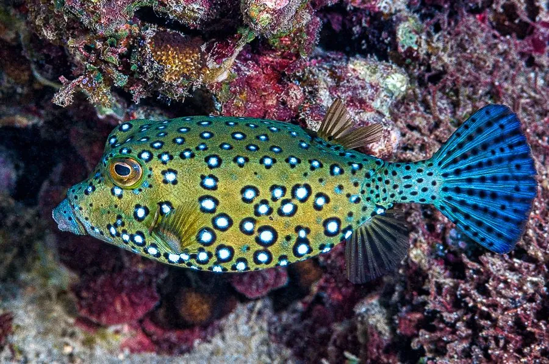

鱼类 · 动物界
粒突箱鲀 Ostracion cubicus

身体像方盒子一样被骨质甲板包裹的珊瑚礁鱼，幼鱼鲜黄带黑斑，游泳缓慢，靠坚硬的“装甲”和皮肤毒素自卫。
- 分类
- 门脊索动物门纲硬骨鱼纲目鲀形目科箱鲀科属箱鲀属
- 栖息环境
- 热带珊瑚礁和潟湖，水深 1–40 m，常活动于礁石和珊瑚之间
- 地理分布
- 印度洋—太平洋热带海域，从东非、东南亚到日本南部和澳大利亚北部，中国南海有分布
- 保护级别
- 暂无评估；中国未列入国家重点保护野生动物名录
物种志
粒突箱鲀的身体近乎立方体，被由骨板愈合而成的坚硬“盒子”包裹，只有口、眼、鳍和尾部露在外面。幼鱼通体鲜黄，布满黑色圆斑，模样十分可爱；成鱼的颜色转为蓝灰或黄褐色，斑点变淡。成鱼体长一般 30–45 cm。
粒突箱鲀分布于印度洋—太平洋的热带珊瑚礁，包括东非、东南亚、日本南部和澳大利亚北部，中国南海有分布。它栖息于礁区和潟湖，水深 1–40 m，行动缓慢，靠背鳍、臀鳍和尾鳍的摆动游动。它是杂食偏肉食性鱼类，吃藻类、小型无脊椎动物和鱼卵。粒突箱鲀的防御方式很特别：坚硬的骨质外壳让捕食者难以下口，皮肤在受到威胁时还会释放箱鲀毒素，这种毒素在水族箱中可能毒死其他鱼。它通常成对活动，在礁区有相对固定的活动范围。目前它没有IUCN 的正式评估，中国未将其列入国家重点保护野生动物名录。
形态与习性
- 食性杂食偏肉食，吃藻类、小型无脊椎动物和鱼卵
- 体长一般 30–45 cm
- 外壳身体被骨质甲板愈合成的硬壳包裹，只露出眼、口和鳍
- 毒素受威胁时皮肤会释放箱鲀毒素
- 繁殖通常成对活动，在礁区产卵
- 习性行动缓慢，靠背鳍、臀鳍和尾鳍摆动游动
趣味知识
- 箱鲀的身体被骨质甲板包成一个方盒子，只留出口、眼和鳍。
- 受惊时它的皮肤会释放毒素，在水族箱里可能毒死其他鱼。
- 幼年粒突箱鲀通体鲜黄、布满黑斑，长大后颜色会变得暗淡。